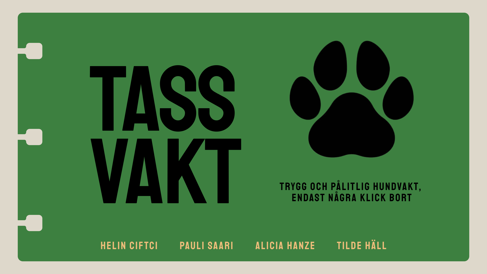
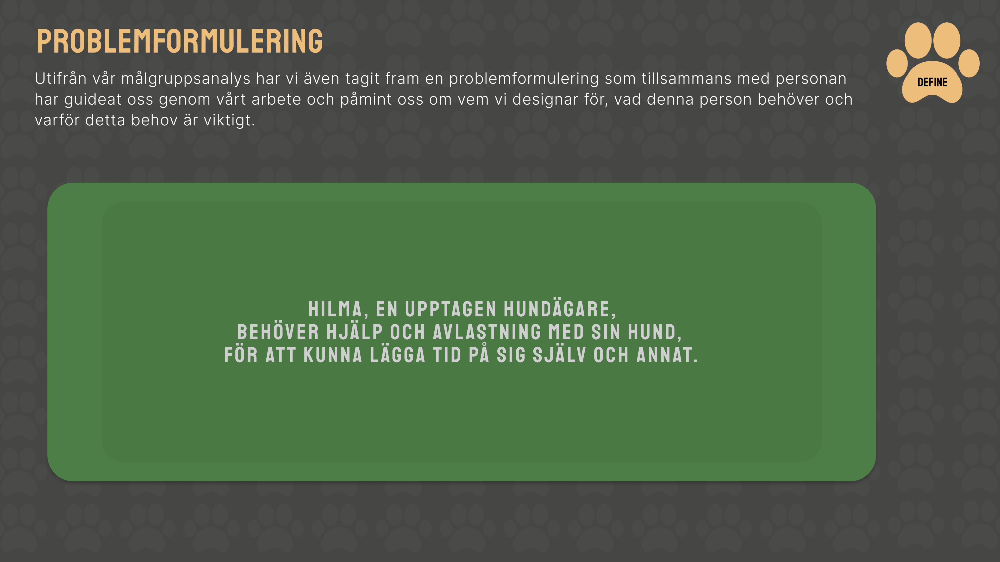
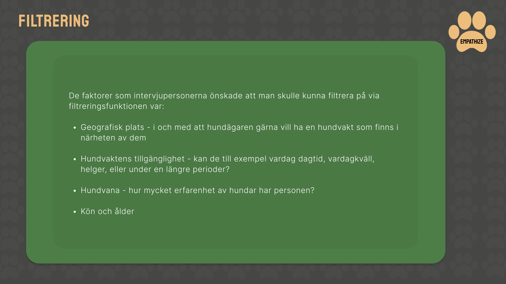
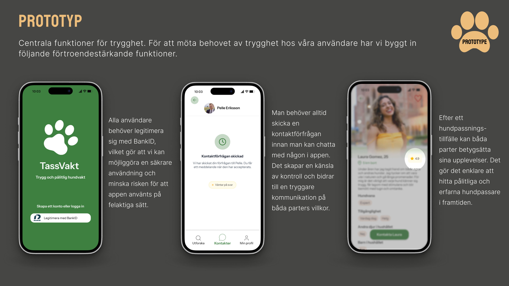
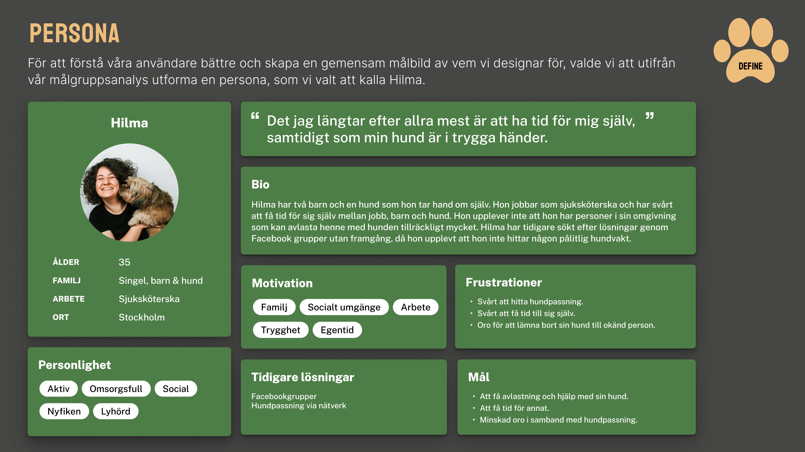
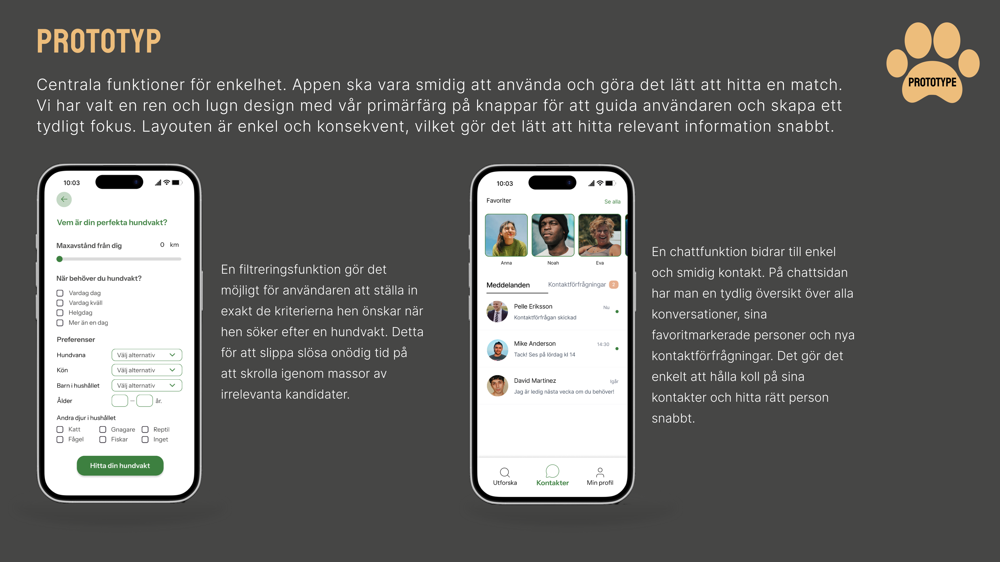

TASSVAKT
Detta projekt genomfördes inom ramen för en UX-designutbildning och fokuserade på att utforska hur trygg hundpassning kan designas som en digital tjänst, från research till testad prototyp.

Överblick & kontext
Projektets mål var att genomföra hela UX-designprocessen i praktiken – från målgruppsanalys och användarintervjuer till prototyp och användartestning.
Min roll & mitt fokus
Jag var involverad i samtliga delar av processen, med tyngdpunkt på UX-research, analys och syntes.
Jag tog särskilt ansvar i analys- och syntesarbetet, där stora mängder kvalitativ data behövde struktureras, prioriteras och översättas till tydliga insikter och designriktning.
Mitt ansvar:
- målgruppsanalys
- planering och genomförande av användarintervjuer
- analys och syntes
- problemformulering
- planering och analys av användartester
Mitt bidrag bestod främst av att strukturera information, identifiera mönster och säkerställa att designbeslut baserades på användarinsikter.
Utgångspunkt & problemområde
Bakgrunden var att många hundägare upplever osäkerhet kring att hitta pålitlig hundpassning, särskilt utanför det egna nätverket.
Tidiga antaganden:
- behov av tillgänglighet
- idé om att hundägare kunde passa varandras hundar
Dessa antaganden förändrades genom research.
Projektet inleddes med antaganden som senare kom att både bekräftas och utmanas genom kvalitativ research.

Exempel på hur problemområdet formulerades tidigt i projektet.
Research-upplägg
Vi genomförde kvalitativa intervjuer med hundägare i större svenska städer.
Intervjuerna var en del av kursupplägget, men metoden visade sig också vara särskilt lämplig då projektets fokus låg på att förstå hundägares situation, oro och beslutsfattande snarare än att validera färdiga lösningar.
Metodval baserades på:
- öppna frågor
- följdfrågor
- djup förståelse
Urval:
- 4 intervjupersoner
- kvinnor 20–45 år
- begränsat urval (reflektion)
Urvalet gav tydliga mönster, men begränsade möjligheten att dra bredare slutsatser kring kön, ålder och livssituation. Detta påverkade hur generella insikterna kunde vara, men var tillräckligt för att identifiera centrala behov och riskområden.
Utdrag ur researchmaterial – visas som exempel, inte fullständig dokumentation.

Centrala insikter
Behovet av trygghet och tillit visade sig vara mer centralt än förväntat och hade en tydlig emotionell grund.
Matchning handlade inte om att erbjuda många val, utan om att hjälpa användare att fatta trygga beslut genom relevanta kriterier och filtrering som kognitiv avlastning.
Antagandet om att hundägare skulle kunna passa varandras hundar saknade stöd i intervjuerna och övergavs tidigt.
Från insikt till tjänst
Problemet var ett förtroendeproblem snarare än ett gränssnittsproblem.
Utmaningen handlade inte enbart om UX i appen, utan om hur en digital tjänst kan skapa förtroende mellan människor som inte känner varandra.
Designbeslut:
- BankID-verifiering
- kontaktförfrågningar
- betygssystem
Syftet var att skapa tillit i hela tjänsteekosystemet.

Exempel på hur förtroende översattes till tjänstefunktioner.
Lösning (översikt)
App som kopplar samman hundägare och hundvakter, fokuserar på trygghet, enkelhet och personlighet och stödjer informerade beslut.

Prototypens höjdpunkter
Prototyp med fokus på funktion och flöde snarare än visuell perfektion.
Prototypen användes främst som ett verktyg för att testa hypoteser och flöden, inte som en färdig produktdesign.

Utvalda prototypvyer med fokus på trygghet och enkelhet.
Användartestning
Två användartester genomfördes.
Syfte:
- testa centrala funktioner
- hitta friktion
- samla feedback
Tester genomfördes med personer som inte deltagit i intervjuerna, för att minska risken att enbart bekräfta redan kända perspektiv.
Lärdomar från test
- intuitivt för team ≠ intuitivt för användare
- små detaljer påverkar mycket
- research förändrar riktning
Ett tydligt exempel var hur en användare fastnade i ett oväntat användarmönster trots att en enklare väg fanns, vilket tydliggjorde hur designantaganden inte alltid delas av användare.
Vad projektet lärde mig om UX research i praktiken
Projektet fördjupade min förståelse för UX research som ett praktiskt och iterativt arbete.
Framför allt blev det tydligt att:
– research ofta utmanar även rimliga antaganden
– kvalitativ data kräver aktiv analys och syntes för att bli användbar
– användartester validerar lösningar, inte behov
– tidig research sparar omfattande designarbete senare
Arbetet visade hur research, design och produktbeslut hänger tätt samman och kontinuerligt påverkar varandra.
Reflektion & nästa steg
Projektet har tydliggjort hur UX research, design och produktbeslut är tätt sammanflätade och sällan kan separeras i tydliga steg.
Att arbeta med research tidigt visade sig avgörande för att undvika att lägga tid på lösningar som inte adresserar verkliga behov. Samtidigt blev det tydligt att designbeslut ofta väcker nya frågor som kräver ytterligare research.
Inför LIA vill jag fördjupa mig i hur UX research bedrivs i verkliga organisatoriska sammanhang, med särskilt fokus på intervjuer, analys av kvalitativ data och att omsätta insikter till hållbara beslut.
Utvalda projektartefakter
Följande material är utdrag ur projektets dokumentation och visas som kompletterande kontext.